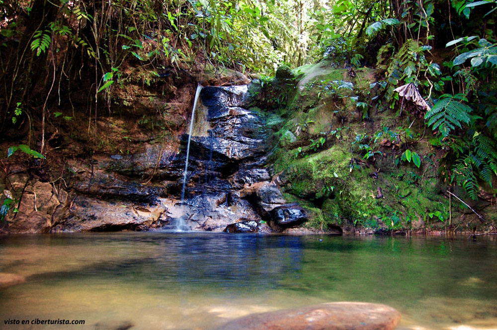
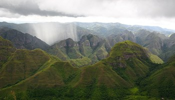
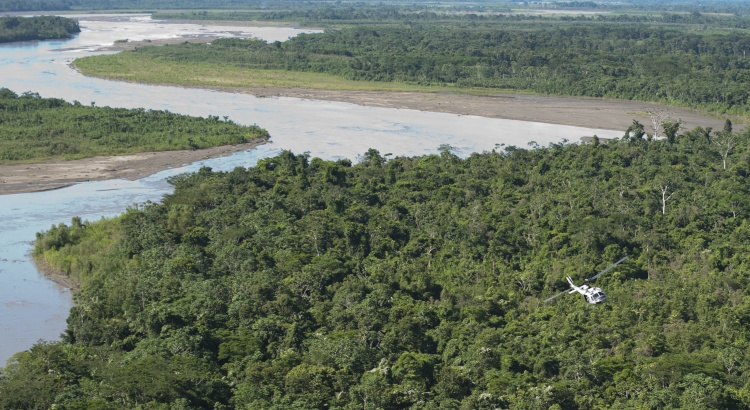

En su interior tiene unas escaleras espirales que te llevan hasta la cabeza del Cristo, lograras contemplar todo el esplendor de la ciudad y la “laguna Alalay”.Todos los visitantes son recibidos con los brazos abiertos por el Cristo y el pueblo cochabambino, esto es símbolo de la calidez de la gente.Icono típico de nuestras tradiciones, de nuestra cultura y danza representativa del departamento

Situado a dos kilómetros de Villa Tunari, en el Chapare, fue creado hace más de 10 años, es el lugar dedicado a la readaptación de animales que vivían en cautiverio. Este parque tiene una superficie de 36 hectáreas oficiales, a las que se suman otras 110 que se están utilizando con el permiso de las comunidades.

La Plaza 14 de Septiembre es una plaza ubicada en la ciudad de Cochabamba, Bolivia.

Corresponde a la tipología de plaza de armas, se halla flanqueada por los edificios que representaban el poder estatal y religioso en la ciudad.